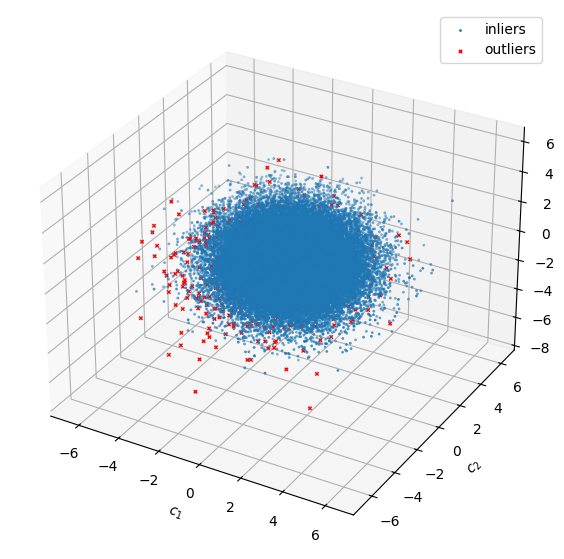
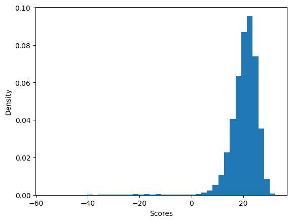
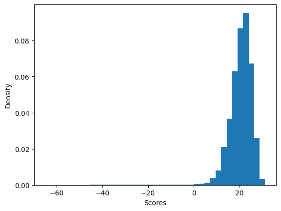
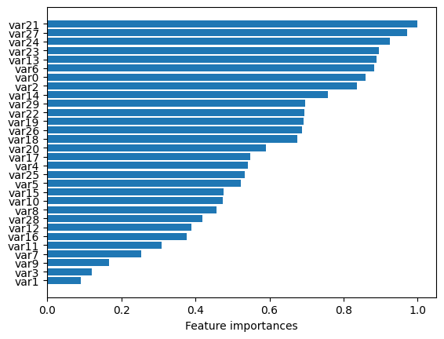

Simulated toy data example
[25]:
import numpy as np
import matplotlib.pyplot as plt
from bhad.utils import Discretize, mvt2mixture
from bhad.model import BHAD
Draw from a two-component multivariate Student-t mixture distribution
Note: Anomaly class corresponds to the minority mixture component
[26]:
seed = 42
outlier_prob_true = .01 # probab. for outlier ; should be consistent with contamination rate in your model
k = 30 # feature dimension
N = 5*10**4 # sample size
# Specify first and second moments for each component
bvt = mvt2mixture(thetas = {'mean1' : np.full(k,-1), 'mean2' : np.full(k,.5),
'Sigma1' : np.eye(k)*.4, 'Sigma2' : np.eye(k)*.1,
'nu1': 3.*k, 'nu2': 3.*k}, seed = seed, gaussian = False)
# Get latent draws and observations:
#------------------------------------
y_true, dataset = bvt.draw(n_samples = N, k = k, p = outlier_prob_true)
print(dataset.shape)
(50000, 30)
[27]:
y_true.mean() # probab. latent class 1 (=anomaly)
[27]:
np.float64(0.01024)
Visualize your data:
Reduce dimension for visualization only:
[28]:
from sklearn.decomposition import TruncatedSVD
from sklearn.preprocessing import StandardScaler
scaler = StandardScaler()
X = scaler.fit_transform(dataset)
X_reduce = TruncatedSVD(n_components=3).fit_transform(X)
Plot all the ground truth points together with the predictions
[29]:
fig = plt.figure(figsize=(10,7))
ax = fig.add_subplot(111, projection='3d')
ax.set_xlabel(r'$c_{1}$') ; ax.set_ylabel(r'$c_{2}$') ;ax.set_zlabel(r'$c_{3}$')
# Plot the compressed inliers data points
ax.scatter(X_reduce[y_true == 0, 0], X_reduce[y_true == 0, 1], zs=X_reduce[y_true == 0, 2], s=4, lw=0, label = "inliers")
# outliers
ax.scatter(X_reduce[y_true == 1, 0], X_reduce[y_true == 1, 1], zs=X_reduce[y_true == 1, 2],
lw=1, s=6, marker="x", c="red", alpha=1, label = "outliers")
ax.legend()
plt.show();

Partition your dataset:
[30]:
from sklearn.model_selection import train_test_split
X_train, X_test, y_train, y_test = train_test_split(dataset, y_true, test_size=0.33, random_state=42)
print(X_train.shape)
print(X_test.shape)
print(np.unique(y_train, return_counts=True))
print(np.unique(y_test, return_counts=True))
(33500, 30)
(16500, 30)
(array([0, 1]), array([33147, 353]))
(array([0, 1]), array([16341, 159]))
Use another candidate anomaly detector for comparison:
[49]:
from sklearn.ensemble import IsolationForest
from sklearn.metrics import make_scorer, f1_score
from sklearn import model_selection
# Tune hyperparameters for fair comparison
param_grid = {
'contamination': [outlier_prob_true],
'max_features': [10, 20, 30],
'bootstrap': [True, False],
'n_estimators': [50, 100, 200]
}
f1sc = make_scorer(f1_score, average='macro')
grid_search = model_selection.GridSearchCV(
IsolationForest(),
param_grid,
scoring=f1sc,
refit=True,
cv=3,
return_train_score=True,
verbose=1
)
grid_search.fit(X_train, y_train)
Fitting 3 folds for each of 18 candidates, totalling 54 fits
[49]:
GridSearchCV(cv=3, estimator=IsolationForest(),
param_grid={'bootstrap': [True, False], 'contamination': [0.01],
'max_features': [10, 20, 30],
'n_estimators': [50, 100, 200]},
return_train_score=True,
scoring=make_scorer(f1_score, response_method='predict', average=macro),
verbose=1)In a Jupyter environment, please rerun this cell to show the HTML representation or trust the notebook. On GitHub, the HTML representation is unable to render, please try loading this page with nbviewer.org.
GridSearchCV(cv=3, estimator=IsolationForest(),
param_grid={'bootstrap': [True, False], 'contamination': [0.01],
'max_features': [10, 20, 30],
'n_estimators': [50, 100, 200]},
return_train_score=True,
scoring=make_scorer(f1_score, response_method='predict', average=macro),
verbose=1)IsolationForest(bootstrap=True, contamination=0.01, max_features=10,
n_estimators=50)IsolationForest(bootstrap=True, contamination=0.01, max_features=10,
n_estimators=50)[50]:
# Best model and parameters
best_iso_forest = grid_search.best_estimator_
best_params = grid_search.best_params_
print("Best Parameters:", best_params)
# Predict anomalies
y_pred_train = best_iso_forest.predict(X_train)
y_pred_test = best_iso_forest.predict(X_test)
# -1 indicates anomalies, 1 indicates normal points
print(np.unique(y_pred_train, return_counts=True))
print(np.unique(y_pred_test, return_counts=True))
Best Parameters: {'bootstrap': True, 'contamination': 0.01, 'max_features': 10, 'n_estimators': 50}
(array([-1, 1]), array([ 335, 33165]))
(array([-1, 1]), array([ 159, 16341]))
[51]:
from sklearn.metrics import classification_report
# Make comparable to y_true encoding in DGP above
y_pred_test[y_pred_test == 1] = 0
y_pred_test[y_pred_test == -1] = 1
print(classification_report(y_test, y_pred_test, target_names=['Inlier', 'Outlier']))
precision recall f1-score support
Inlier 1.00 1.00 1.00 16341
Outlier 0.87 0.87 0.87 159
accuracy 1.00 16500
macro avg 0.93 0.93 0.93 16500
weighted avg 1.00 1.00 1.00 16500
Model training and prediction
[52]:
from sklearn.pipeline import Pipeline
# we set nbins = None and thus estimate the optimal number of bins for each feature based on the Posterior mass function
pipe = Pipeline(steps=[
('discrete' , Discretize(nbins = None, verbose = True)), # step only needed if continous features are present
('model', BHAD(contamination = outlier_prob_true)) # set 1% contamination as in DGP (oracle knowledge ;)
])
y_pred_train = pipe.fit_predict(X_train)
scores_train = pipe.decision_function(X_train)
-- Bayesian Histogram-based Anomaly Detector (BHAD) --
Setting maximum number of bins 184.
Input shape: (33500, 30)
Used 30 numeric feature(s) and 0 categorical feature(s).
Determining optimal number of bins for numeric features
Feature var0 using 49 bins
Determining optimal number of bins for numeric features
Feature var1 using 61 bins
Determining optimal number of bins for numeric features
Feature var2 using 42 bins
Determining optimal number of bins for numeric features
Feature var3 using 52 bins
Determining optimal number of bins for numeric features
Feature var4 using 46 bins
Determining optimal number of bins for numeric features
Feature var5 using 51 bins
Determining optimal number of bins for numeric features
Feature var6 using 51 bins
Determining optimal number of bins for numeric features
Feature var7 using 51 bins
Determining optimal number of bins for numeric features
Feature var8 using 55 bins
Determining optimal number of bins for numeric features
Feature var9 using 57 bins
Determining optimal number of bins for numeric features
Feature var10 using 45 bins
Determining optimal number of bins for numeric features
Feature var11 using 45 bins
Determining optimal number of bins for numeric features
Feature var12 using 53 bins
Determining optimal number of bins for numeric features
Feature var13 using 42 bins
Determining optimal number of bins for numeric features
Feature var14 using 60 bins
Determining optimal number of bins for numeric features
Feature var15 using 53 bins
Determining optimal number of bins for numeric features
Feature var16 using 54 bins
Determining optimal number of bins for numeric features
Feature var17 using 47 bins
Determining optimal number of bins for numeric features
Feature var18 using 49 bins
Determining optimal number of bins for numeric features
Feature var19 using 51 bins
Determining optimal number of bins for numeric features
Feature var20 using 50 bins
Determining optimal number of bins for numeric features
Feature var21 using 35 bins
Determining optimal number of bins for numeric features
Feature var22 using 55 bins
Determining optimal number of bins for numeric features
Feature var23 using 47 bins
Determining optimal number of bins for numeric features
Feature var24 using 40 bins
Determining optimal number of bins for numeric features
Feature var25 using 55 bins
Determining optimal number of bins for numeric features
Feature var26 using 42 bins
Determining optimal number of bins for numeric features
Feature var27 using 43 bins
Determining optimal number of bins for numeric features
Feature var28 using 44 bins
Determining optimal number of bins for numeric features
Feature var29 using 47 bins
Fit BHAD on discretized data.
Input shape: (33500, 30)
One-hot encoding categorical features.
Matrix dimension after one-hot encoding: (33500, 1172)
Finished training.
Score input data.
Score input data.
[53]:
print(np.unique(y_pred_train, return_counts=True))
(array([-1, 1]), array([ 335, 33165]))
[54]:
y_pred_test = pipe.predict(X_test)
scores_test = pipe.decision_function(X_test)
print(np.unique(y_pred_test, return_counts=True))
Score input data.
Apply fitted one-hot encoder.
Score input data.
Apply fitted one-hot encoder.
(array([-1, 1]), array([ 149, 16351]))
Plot score distribution:
[55]:
plt.hist(scores_train, density=True, bins=40)
plt.ylabel('Density')
plt.xlabel('Scores');

[56]:
plt.hist(scores_test, density=True, bins=40)
plt.ylabel('Density')
plt.xlabel('Scores');

[57]:
from sklearn.metrics import classification_report
# Make comparable to y_true encoding
y_pred_train[y_pred_train == 1] = 0
y_pred_train[y_pred_train == -1] = 1
print(classification_report(y_train, y_pred_train, target_names=['Inlier', 'Outlier']))
precision recall f1-score support
Inlier 1.00 1.00 1.00 33147
Outlier 0.97 0.92 0.95 353
accuracy 1.00 33500
macro avg 0.99 0.96 0.97 33500
weighted avg 1.00 1.00 1.00 33500
[58]:
# Make comparable to y_true encoding
y_pred_test[y_pred_test == 1] = 0
y_pred_test[y_pred_test == -1] = 1
print(classification_report(y_test, y_pred_test, target_names=['Inlier', 'Outlier']))
precision recall f1-score support
Inlier 1.00 1.00 1.00 16341
Outlier 0.98 0.92 0.95 159
accuracy 1.00 16500
macro avg 0.99 0.96 0.97 16500
weighted avg 1.00 1.00 1.00 16500
Model explanation:
Retrieve local model explanations. Here: Specify all numeric and categorical columns explicitly
[59]:
num_cols = list(X_train.select_dtypes(include=['float', 'int']).columns)
cat_cols = list(X_train.select_dtypes(include=['object', 'category']).columns)
[60]:
from sklearn.pipeline import Pipeline
pipe = Pipeline(steps=[
('discrete', Discretize(nbins = 50, verbose = True)),
('model', BHAD(contamination = 0.01, num_features = num_cols, cat_features = cat_cols))
])
y_pred_train = pipe.fit_predict(X_train)
-- Bayesian Histogram-based Anomaly Detector (BHAD) --
Setting maximum number of bins 184.
Input shape: (33500, 30)
Used 30 numeric feature(s) and 0 categorical feature(s).
Binned continous features into 50 bins.
Fit BHAD on discretized data.
Input shape: (33500, 30)
One-hot encoding categorical features.
Matrix dimension after one-hot encoding: (33500, 1205)
Finished training.
Score input data.
[61]:
from bhad import explainer
local_expl = explainer.Explainer(bhad_obj = pipe.named_steps['model'], discretize_obj = pipe.named_steps['discrete']).fit()
--- BHAD Model Explainer ---
Using fitted BHAD and discretizer.
Marginal distributions estimated using train set of shape (33500, 30)
[ ]:
df_train = local_expl.get_explanation(append = False)
df_train.head(5)
[63]:
global_feat_imp = local_expl.global_feat_imp # based on X_train
[64]:
from matplotlib import pyplot as plt
plt.barh(global_feat_imp.index, global_feat_imp.values.flatten())
plt.xlabel("Feature importances")
plt.show();

[65]:
y_pred_test = pipe.predict(X_test)
Score input data.
Apply fitted one-hot encoder.
[66]:
df_test = local_expl.get_explanation(thresholds = [.1]*X_test.shape[1]) # make threshold more conservative (only more extreme values are considered as outliers)
Create local explanations for 16500 observations.
Using custom thresholds.
[ ]:
for obs, ex in enumerate(df_test.explanation.values):
if (obs % 10) == 0:
print(f'\nObs. {obs}:\n', ex)